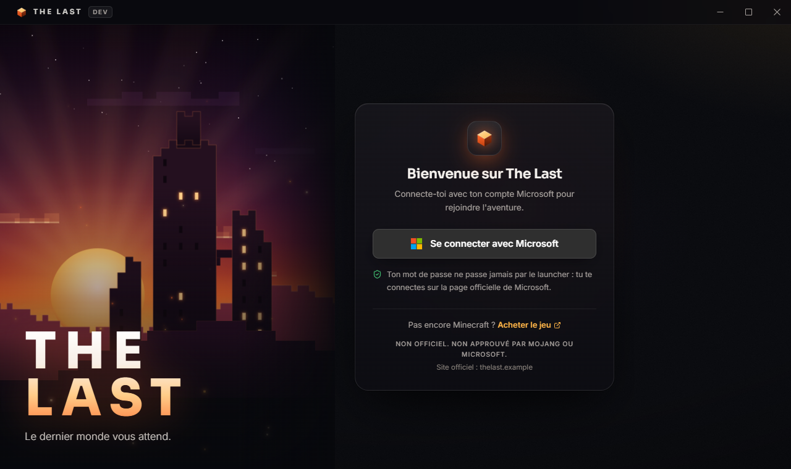
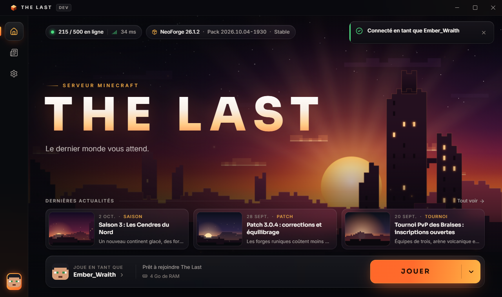
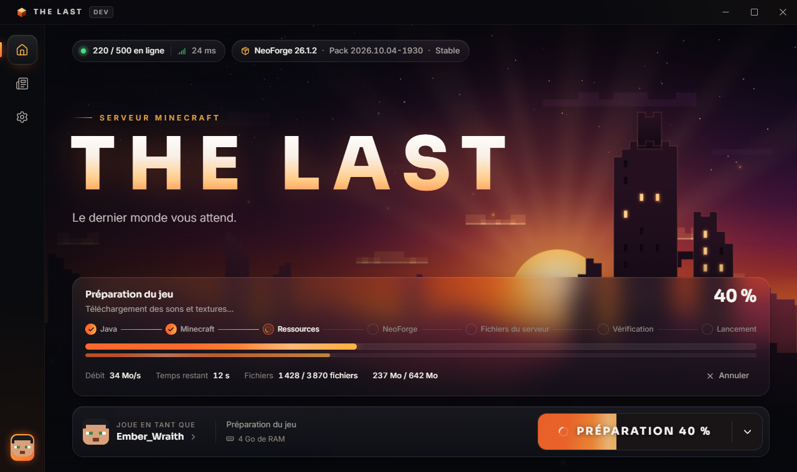
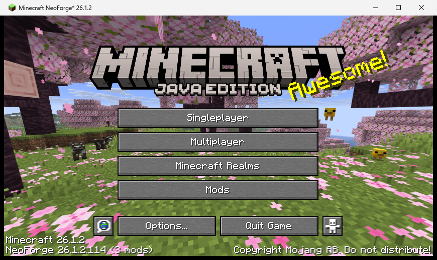

Contenu sur mesure
Des mods et des systèmes créés pour le serveur, installés automatiquement par le launcher.
Le dernier monde vous attend.
Un serveur moddé (NeoForge) au contenu fait maison, pensé pour l'aventure et la progression plutôt que pour le PvP faction. Il se rejoint avec son propre launcher, simple et sécurisé.
En préparation — ouverture prochaineThe Last est un projet indépendant, développé en France, qui ouvrira ses portes quand il sera prêt.
Des mods et des systèmes créés pour le serveur, installés automatiquement par le launcher.
Un univers tourné vers l'exploration, la construction et la progression.
Il faut posséder Minecraft: Java Edition. Le serveur vérifie chaque compte auprès de Mojang (mode « online »).
Le launcher installe et met à jour tout ce qu'il faut pour jouer sur The Last : Minecraft, Java, NeoForge, les mods et la configuration du serveur. Un clic sur « Jouer » et c'est parti.
Tu te connectes dans ton navigateur, sur la page de Microsoft. Le launcher ne voit jamais ton mot de passe.
Minecraft est téléchargé depuis les serveurs officiels de Mojang. Les fichiers du serveur sont signés numériquement et vérifiés avant chaque lancement.
Pas de connexion hors ligne : il faut un compte Microsoft qui possède Minecraft: Java Edition.
Un fichier abîmé ou modifié ? Le launcher le détecte et le remplace par la bonne version.




Captures de la version en développement, avec des données de démonstration (joueurs en ligne, actualités, pseudo).
Téléchargement : le launcher sera proposé ici, et uniquement ici, à l'ouverture du serveur (Windows d'abord). Ne télécharge jamais « The Last Launcher » depuis un autre site.
Ce que le launcher fait, et surtout ce qu'il ne fait pas.
Seule la clé de connexion renouvelable fournie par Microsoft est gardée, chiffrée, sur ton ordinateur. Rien n'est envoyé à The Last.
Pas de télémétrie, pas de publicité, pas d'empreinte de ton matériel. Ce site n'utilise aucun cookie.
Le launcher refuse toute mise à jour ou tout fichier qui ne porte pas notre signature.
Détails complets : politique de confidentialité.